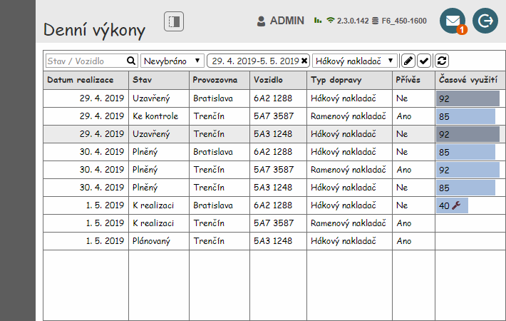
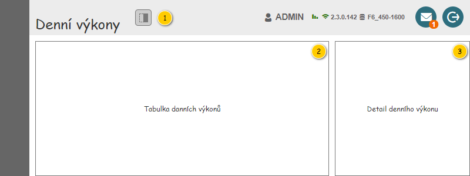
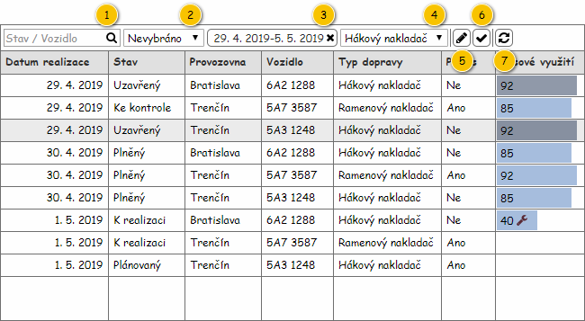

Stručný popis
Uživatelské rozhraní poskytuje uživateli přístup k Denním výkonům. Dále mu umožňuje spouštět další akce ke konkrétním Denním výkonům a využít nástroje pro filtrování a řazení Denních výkonů. Na vstupu pak mohou být předána vstupní data specifikující zobrazení Denních výkonů:
- Provozovna,
- Období,
- Typ dopravy (kolekce).
Poznámka:
- Pokud nejsou vstupní data k dispozici, jsou použity výchozí hodnoty.
- Buď jsou nastaveny všechny tři parametry zároveň, nebo není použit ani jeden z nich. Není tedy možné nastavit část parametrů dle vstupních dat a část dle výchozího nastavení.
Uživatelské rozhraní
Nejdříve je zobrazen drátový diagram celé obrazovky bez zobrazeného panelu s detailními informacemi.
Poznámka: Drátový diagram celé obrazovky se zobrazeným panelem s detailními informacemi je pak uveden v dokumentu s popisem tohoto panelu – viz 200UI04: Detail denního výkonu.

Rozložení
Drátový diagram

Přehled UI komponent
| Callout | Skupina |
|---|---|
| 1 | Nadpis obrazovky |
| 2 | Tabulka denních výkonů |
| 3 | Detail denního výkonu |
Nadpis obrazovky
Drátový diagram
Přehled UI komponent
| Callout | Komponenta | Nadpis | Typ komponenty | Příklad hodnoty | Hodnota | Výchozí hodnota | Formát | Zpřístupněná | Viditelná | Chování | Validace | Poznámka |
|---|---|---|---|---|---|---|---|---|---|---|---|---|
| 1 | Nadpis obrazovky | – | Label | – | Denní výkony | – | – | – | Vždy | – | – | – |
| 2 | Zobrazení/skrytí panelu s detailními informacemi | – | ToggleButton | – | Ikona: ra-panel-top.
| – | Text pro ToolTip: Detail. | Vždy | Vždy | Pokud je tlačítko stisknuto, je zobrazen panel s detailními informacemi. Pokud tlačítko stisknuto není, je panel s detailními informacemi skrytý. | – | – |
Tabulka denních výkonů
Není možné označit více řádků tabulky zároveň.
Drátový diagram

Přehled UI komponent
Pokud uživatel vjede myší na prvek nástrojové lišty, je zobrazen ToolTip. V rámci ToolTipu, pokud není uvedeno jinak, je zobrazen text ve sloupci Komponenta.
| Callout | Komponenta | Nadpis | Typ komponenty | Příklad hodnoty | Hodnota | Výchozí hodnota | Formát | Zpřístupněná | Viditelná | Chování | Validace | Poznámka |
|---|---|---|---|---|---|---|---|---|---|---|---|---|
| 1 | Textový filtr | – | Full Text Filter (viz Ovládací prvky třetích stran) SearchBox
| – | – | – | Pokud není v rámci ovládacího prvku zadán hledaný text, jsou na pozadí (placeholder) vypsány názvy sloupců, podle kterých je filtrováno (viz sloupce Chování). Mezi jednotlivými názvy sloupců je použit oddělovač: „/“. Tento text je zobrazován i v rámci bublinkové nápovědy ovládacího prvku. Chování je pak řešeno v rámci použité komponenty. | Vždy | Vždy | Psaním filtruje řádky dle sloupců:
Ve sloupcích je vyhledáváno fulltextově. Pokud není zadán žádný text, jsou zobrazeny všechny Denní výkony. | – | – |
| 2 | Výběr provozovny | – | ComboBox
Pokud má uživatel právo na právě jednu Provozovnu, je ovládací prvek v režimu pro čtení. Není tedy možné rozbalit kontextovou nabídku. | Trenčín | Entita Provozovna. Dostupné jsou takové Provozovny, které splňují zároveň všechny uvedené podmínky:
Kromě dostupných Provozoven je obsažena i možnost Nevybráno, která je zobrazena jako první. Pokud má uživatel právo na právě jednu Provozovnu, není možnost Nevybráno k dispozici. | Pokud má uživatel právo na více než jednu Provozovnu:
Jinak:
| Vždy | Vždy | Po výběru Provozovna se načtou odpovídající Denní výkony – viz Načtení denních výkonů. | – | Provozovna může být vybrána dle dat předaných na vstupu. | |
| 3 | Výběr období | – | Button
Obsahuje tlačítko pro zrušení nastaveného období. | 29. 4. 2019-5. 5. 2019 | Jedná se o výstup nabídky pro nastavení období – položky Datum od, Datum do. Je umožněno „nenastavit“ požadované období. | Nenastaveno | Při nezadaném období zobrazuje text "Období neomezeno". | Vždy | Vždy | Po stisknutí tlačítka se zobrazí kontextová nabídka pro výběr období po dnech – viz Výběr období po dnech. V nabídce je zobrazen aktuálně nastavené období. Po výběru či zrušení období se načtou odpovídající Denní výkony – viz Načtení denních výkonů. | – | Období může být nastaveno dle dat předaných na vstupu. |
| 4 | Výběr typu dopravy | – |
| Hákový nakladač, Ramenový nakladač | – | Vybráno vše | – | Vždy | Vždy | Po stisknutí tlačítka se zobrazí nabídka pro výběr Typu dopravy (viz Výběr typu dopravy). Jakmile uživatel potvrdí výběr, načtou se odpovídající Denní výkony (viz Načtení denních výkonů). | – | Je možné vybrat všechny dostupné Typy dopravy zároveň. Pokud není vybrán žádný Typy dopravy, nejsou zobrazeny ani žádné Denní výkony (odpovídá aktuálnímu stavu). Typ dopravy může být nastaven dle dat předaných na vstupu. |
| 5 | Editace denního výkonu | – | Button
| – | – | – | – | Vždy | Pokud má uživatel právo na editaci Denního výkonu (EDIT_RP_DAILY_ROUTES, viz Oprávnění na typ entity). Pokud je vybrán Denní výkon. Pokud poslední označený Denní výkon obsahuje alespoň jednu Položku denního výkonu (atribut Položky denního výkonu entity Denní výkon). | Spustí 200UC02: Upravit denní výkon, na vstup UC jsou předány následující hodnoty:
| – | Možnost a rozsah editace v rámci formuláře je dán stavem odpovídajícího Denního výkonu. |
| 6 | Potvrzení realizace denního výkonu | – | Button
| – | – | – | – | Vždy | Pokud má uživatel právo na editaci Denního výkonu (EDIT_RP_DAILY_ROUTES, viz Oprávnění na typ entity). Pokud je vybrán Denní výkon. Pokud je poslední označený Denní výkon v jednom z uvedených stavů:
| Spustí 400UC01: Zobrazit obrazovku kontroly realizace denního výkonu, na vstup UC jsou předány následující hodnoty:
| – | Možnost a rozsah editace v rámci formuláře je dán stavem odpovídajícího Denního výkonu. |
| 7 | Obnovit data | – | Button
| – | – | – | – | Vždy | Vždy | Po stisknutí tlačítka se načtou odpovídající Denní výkony – viz Načtení denních výkonů. | – | – |
Chování
Načtení denních výkonů
Pokud dojde k situaci, kdy mají mají být načteny Denní výkony, je nutné na základě vstupních dat vyhodnotit, které Denní výkony mají být zobrazeny – je spuštěn , na vstup UC jsou předány následující hodnoty:
- Provozovna: hodnota nastavená v poli s výběrem Provozovny (komponenta 2), pokud je zvolena možnost nevybráno, je předáno NULL.
- Období: hodnota nastavená v poli s výběrem období (komponenta 3), pokud není k dispozici, je předáno NULL.
- Typy dopravy: hodnoty nastavené v poli s výběrem Typu dopravy (komponenta 4). Předána pak může být i kolekce, pokud je označeno více Typů dopravy zároveň.
V případě, že nejsou načtena žádná data (žádný Denní výkon neodpovídá zadaným parametrům), je zobrazena prázdná tabulka.
Zobrazení diagramu časového využití
Diagram časového využití je zobrazen na pozadí buňky jako barevný pruh, který představuje poměrnou část mezi časovým využitím konkrétního Denního výkonu a mezním časovým využitím.
Mezní hodnota časového využití je získána následovně:
- Pokud žádný z načtených Denních výkonů nemá hodnotu časového využití vyšší než 100, je mezní hodnota nastavena na 100.
- Jinak je mezní hodnota získána jako maximum časového využití všech načtených Denních výkonů.
Časové využití Denního výkonu je pak získáno dle jeho stavu (atribut Stav):
- Uzavřený: atribut Časové využití entity Realizace denního výkonu, u které se hodnota atributu Denní výkon rovná Dennímu výkonu na odpovídajícím řádku tabulky.
- Jinak: atribut Časové využití entity Denní výkon na odpovídajícím řádku tabulky.
Pokud je mezní hodnota časového využití vyšší než 100, je v digramu naznačena svislá přerušovaná čára, a to na úrovni hodnoty 100.
Rozmezí hodnot v rámci buňky je tedy dáno dvěma krajními hodnotami – 0 a nalezená mezní hodnota. Od tohoto intervalu se pak odvíjí délka jednotlivých barevných pruhů.
Barva pruhu je pak rozlišena dle stavu konkrétního Denního výkonu:
- Uzavřený: #919DAF.
- Jinak: #A7C2E2.
Poznámka: Popis vychází z diagramu časového využití v rámci dokumentu .
Skutečné časové využití
Hodnota skutečného časového využití Denního výkonu je získána z atributu Časové využití entity Realizace denního výkonu, u které se hodnota atributu Denní výkon rovná Dennímu výkonu na odpovídajícím řádku tabulky.
Výběr typu dopravy
V rámci výběru požadovaného Typu dopravy je možné zvolit jeden nebo více Typů dopravy. To je umožněno pomocí nabídky, která je vyvolána kliknutím na odpovídající tlačítko.
Poznámka: Nabídka pro výběr Typu dopravy vychází z rychlého rozšířeného filtru (viz 700UI07: Rychlý rozšířený filtr).
Drátový diagram

Přehled UI komponent
| Callout | Komponenta | Typ komponenty | Příklad hodnoty | Hodnota | Formát | Zpřístupněná | Viditelná | Chování | Validace | Poznámka |
|---|---|---|---|---|---|---|---|---|---|---|
| 1 | Tlačítko pro výběr typu dopravy | Button | Háková nakladač, Ramenový nakladač | Kolekce v nabídce zvolených Typů dopravy. | Pokud jsou vybrány všechny nabízené položky:
Pokud je vybrána více než jedna položka:
Pokud je vybrána právě jedna položka: Jinak není vybrána žádná z položek:
| Vždy | Vždy | Pokud není zobrazena nabídka, stisknutím tlačítka dojde k její zobrazení. Pokud nabídka zobrazena je, stisknutí vyvolá zrušení nastaveného výběru – viz Zrušit zvolené položky (komponenta 5). | – | – |
| 2 | Vybrat vše | CheckBox | – | – | Zobrazen zástupný text: „Vybrat vše“. | Vždy | Vždy | Vybrat vše | – | – |
| 3 | Položky nabídky | CheckBox | Hákový nakladač | Kolekce: Hodnoty systémového číselníku s Typy dopravy. | Vždy | Vždy | Položka filtru | – | – | |
| 4 | Vybrat zvolené položky | Button | – | – | Zobrazen text: „Vybrat“. | Vždy | Vždy | Stisknutím tlačítka dojde k nastavení nově vybraných Typů dopravy – načtou se odpovídající Denní výkony (viz Načtení denních výkonů). | – | – |
| 5 | Zrušit zvolené položky | Button | – | – | Zobrazen text: „Storno“. | Vždy | Vždy | Stisknutím tlačítka dojde k přerušení nastavení nově vybraných Typů dopravy – je zachován původní stav jako při zobrazení nabídky, nedochází tedy k načtení Denních výkonů. | – | – |
Poznámka: Ve výchozím stavu jsou označeny všechny dostupné položky v nabídce (jsou nastaveny na TRUE).
Tabulky
Denní výkony
Pro zobrazení záznamů v přehledu je použita běžná tabulka, viz 700UI01: Komponenty – tabulka. Z toho vyplývají jak její základní vlastnosti, tak i výchozí nastavení (např. počet záznamů, které je možné označit).
Tabulka je implicitně řazena vzestupně dle sloupce Datum realizace.
| Sloupec | Nadpis | Typ komponenty | Příklad hodnoty | Hodnota | Výchozí hodnota | Formát | Možnosti sloupce | Zpřístupněný | Viditelný | Chování | Validace | Poznámka |
|---|---|---|---|---|---|---|---|---|---|---|---|---|
| Datum realizace | Datum realizace | TextBox | 29. 4. 2019 | Entita Denní výkon. | – |
|
| Nikdy | Vždy | – | – | – |
| Stav | Stav | TextBox | Uzavřený | Entita Denní výkon. | – |
| Nikdy | Vždy | – | – | – | |
| Provozovna | Provozovna | TextBox | Trenčín | Entita Provozovna – atribut Provozovna entity Denní výkon. | – |
| Nikdy | Vždy | – | – | Pokud | |
| Vozidlo | Vozidlo | TextBox | 5A3 1248 | Entita Denní výkon. | – | Pokud není hodnota k dispozici a zároveň je k Dennímu výkonu přiřazeno Vozidlo (atribut Vozidlo), je zobrazen zástupný text: licensePlatePlaceholderText, viz Konfigurační hodnoty. |
| Nikdy | Vždy | – | – | – |
| Typ dopravy | Typ dopravy | TextBox | Hákový nakladač | Entita Typ dopravy – atribut Typ dopravy entity Denní výkon. | – |
| Nikdy | Vždy | – | – | – | |
| Přívěs | Přívěs | TextBox | Ne | Entita Denní výkon. | – | Pokud je hodnota atributu Použití přívěsu rovna TRUE:
Jinak:
|
| Nikdy | Vždy | – | – | – |
| Časové využití | Časové využití | TextBox | 92 | Entita Denní výkon. | – | Pokud nejsou v Denním výkonu obsaženy žádné Položky denního výkonu (atribut Položky denního výkonu nabývá hodnoty NULL):
Pokud je Denní výkon ve stavu Uzavřený: Jinak:
Hodnota je pak vypsána následovně:
|
| Nikdy | Vždy | Zobrazení diagramu časového využití Pokud je v rámci Denního výkonu obsažen alespoň jeden Interval omezení denního výkonu typu Alokace na servis (atribut Typ omezení entity Interval omezení denního výkonu – atribut Intervaly omezení entity Denní výkon), je zobrazena ikona:
Ikona je v rámci buňky zarovnána za hodnotou. | – | – |
| Způsob vyhodnocení realizace | Způsob vyhodnocení realizace | TextBox | FOB | Entita Denní výkon. | – |
| Nikdy | Vždy | – | – | – |
Detail denního výkonu
Popis panelu s detailními informacemi je uveden v samostatném dokumentu – viz 200UI04: Detail denního výkonu. Na vstup jsou pak předána následující data:
- Denní výkon: Právě označený Denní výkon v přehledu (pokud není označen žádný Denní výkon, je předáno NULL).
Nastavení
Persistence nastavení obrazovky
| Skupina | Ovládací prvek | Výchozí hodnota | Poznámka |
|---|---|---|---|
| Skupiny – šířky panelů | – | – | Pokud si uživatel změní poměr velikosti mezi jednotlivými panely obrazovky, je nutné toto rozložení zachovat. Poměr je pak možné měnit mezi Tabulkou denních výkonů a Detailem denního výkonu. Poznámka: Je potřeba počítat s tím, že uložené poměry velikosti mezi jednotlivými panely mohou být v rozporu s minimálními rozměry panelu například ve chvíli, kdy uživatel použije monitor s menším rozlišením – uložené nastavení v takovém okamžiku nemusí korespondovat s aktuálním zobrazením v prohlížeči. TODO: Upřesnit (probíhá konzultace s vývojáři). |
| Tabulka denních výkonů | Nástrojová lišta |
| Pokud uživatel změní vstupní data nastavená v nástrojové liště, je nutné toto nastavení zachovat. Jsou ukládány následující hodnoty:
|
| Tabulka denních výkonů – sloupec, podle kterého je řazeno | Tabulka | Datum realizace, vzestupně | Pokud uživatel změní sloupec, podle kterého je tabulka řazena, je nutné toto nastavení zachovat. |
| Tabulka denních výkonů – sloupce s nastaveným filtrem | Tabulka | Žádné (ve výchozím stavu nejsou nastaveny žádné filtry sloupců). | Pokud uživatel nastaví v některých sloupcích tabulky filtr, je nutné toto nastavení zachovat. |
| Tabulka denních výkonů – skryté sloupce | Tabulka | Žádné (ve výchozím stavu nejsou žádné sloupce skryty). | Pokud uživatel skryje některé sloupce tabulky, je nutné toto nastavení zachovat. |
| Tabulka denních výkonů – pořadí sloupců | Tabulka | – | Pokud uživatel změní pořadí sloupců tabulky, je nutné toto nastavení zachovat. |
| Detail denního výkonu – zobrazení | – | Skrytý | Pokud uživatel zobrazí panel s detailem, je nutné toto nastavení zachovat. Nastavení probíhá pomocí tlačítka ve skupině Nadpis obrazovky. |
| Detail denního výkonu – vybraná záložka | – | Detail | Pokud uživatel změní zobrazenou záložku v panelu s detailem, je nutné toto nastavení zachovat. |
Parametry URL
| Parametr | Skupina | Hodnota | Poznámka |
|---|---|---|---|
| Provozovna | Tabulka denních výkonů | Entita Provozovna. | Je obsažena možnost nevybráno. |
| Období | Tabulka denních výkonů | Datum od a Datum do. | Je obsažena možnost nenastavit období. |
| Typ dopravy | Tabulka denních výkonů | Entita Typ dopravy (kolekce). | Umožňuje zadat více Typů dopravy zároveň. |
| Označené denní výkony | Tabulka denních výkonů | Entita Denní výkon. | – |
Poznámka: Jednotlivé parametru v URL nemusí být čitelné pro lidi.
Grafický návrh
Revize
25. 4. 2024: Tomáš Nadrchal
| Odkaz | Stručný popis změny |
|---|---|
| Tabulka denních výkonů | Revize komponenty pro fulltextový filtr (naznačeno modře). |
24. 10. 2023: Tomáš Nadrchal
| Odkaz | Stručný popis změny/doplnění |
|---|---|
| Denní výkony | Doplněn sloupec se způsobem vyhodnocení realizace (naznačeno růžově). |
31. 8. 2023: Tomáš Nadrchal
| Odkaz | Stručný popis změny/doplnění |
|---|---|
| Tabulka denních výkonů | Revize dostupných provozoven (naznačeno modře). |
10. 3. 2022: Tomáš Nadrchal
| Odkaz | Stručný popis změny/doplnění |
|---|---|
| Tabulka denních výkonů | Revize kontextové nabídky textového filtru (naznačeno růžově). ID-054 |
8. 3. 2022: Tomáš Nadrchal
| Odkaz | Stručný popis změny/doplnění |
|---|---|
| Stručný popis | Revize vstupních parametrů (naznačeno modře). ID-060 |
| Tabulka denních výkonů | Revize ovládacího prvku pro nastavení typu dopravy (naznačeno modře). ID-060 |
| Načtení denních výkonů | Revize chování pro možnost nastavení více typů dopravy zároveň (naznačeno modře). ID-060 |
| Výběr typu dopravy | Doplněn popis ovládacího prvku pro nastavení typu dopravy (naznačeno modře). ID-060 |
| Nastavení | Revize chování pro nastavení typu dopravy (naznačeno modře). ID-060 |
24. 11. 2020: Tomáš Nadrchal
| Odkaz | Stručný popis změny/doplnění |
|---|---|
| Tabulka denních výkonů | Doplněno chování při více označených záznamech zároveň (naznačeno modře). |
| Denní výkony | Doplněny obecné informace o použité tabulce (naznačeno modře). |
14. 10. 2019: Tomáš Nadrchal
| Odkaz | Stručný popis změny/doplnění |
|---|---|
| Denní výkony | Změněn zdroj hodnoty pro zobrazení SPZ odpovídajícího Vozidla (naznačeno modře). |
2. 9. 2019: Tomáš Nadrchal
| Odkaz | Stručný popis změny/doplnění |
|---|---|
| Tabulka denních výkonů | Doplněna podmínka pro viditelnost tlačítka ke spuštění editace Denního výkonu (naznačeno modře). |
22. 8. 2019: Tomáš Nadrchal
| Odkaz | Stručný popis změny/doplnění |
|---|---|
| Denní výkony | Změna formátu hodnoty s časovým využitím (naznačeno modře). |
21. 6. 2019: Tomáš Nadrchal
| Odkaz | Stručný popis změny/doplnění |
|---|---|
| Tabulka denních výkonů | Aktualizován popis dostupných Provozoven v nástrojové liště (komponenta 2, naznačeno modře). |
8. 6. 2019: Tomáš Nadrchal
| Odkaz | Stručný popis změny/doplnění |
|---|---|
| Denní výkony | Doplněn popis dostupných funkcí pro práci s jednotlivými sloupci. |